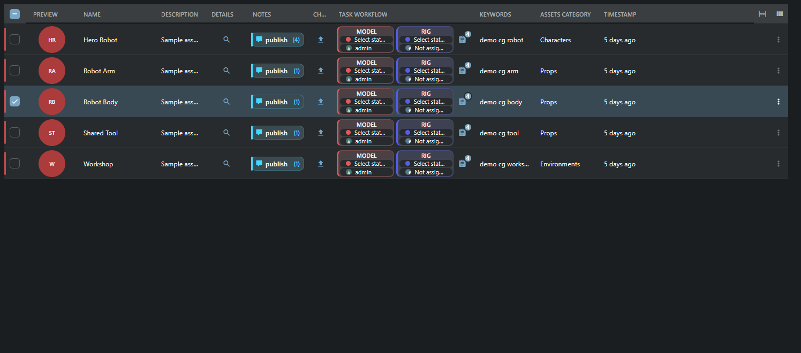
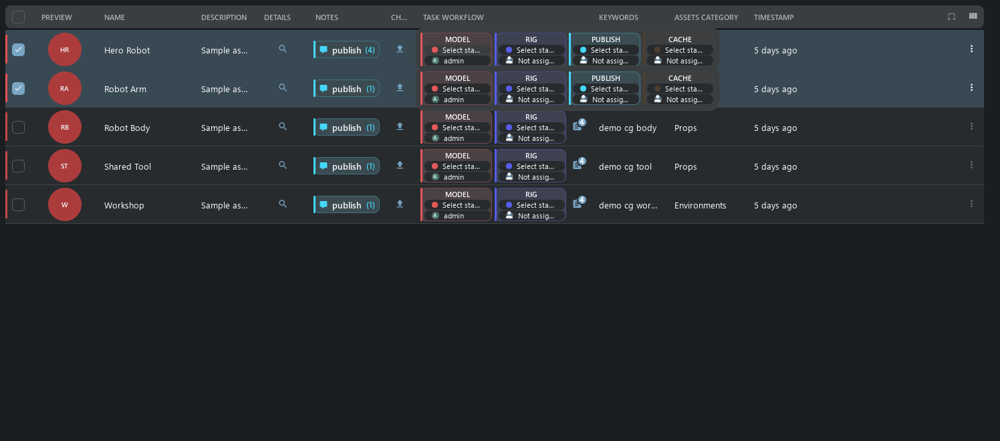
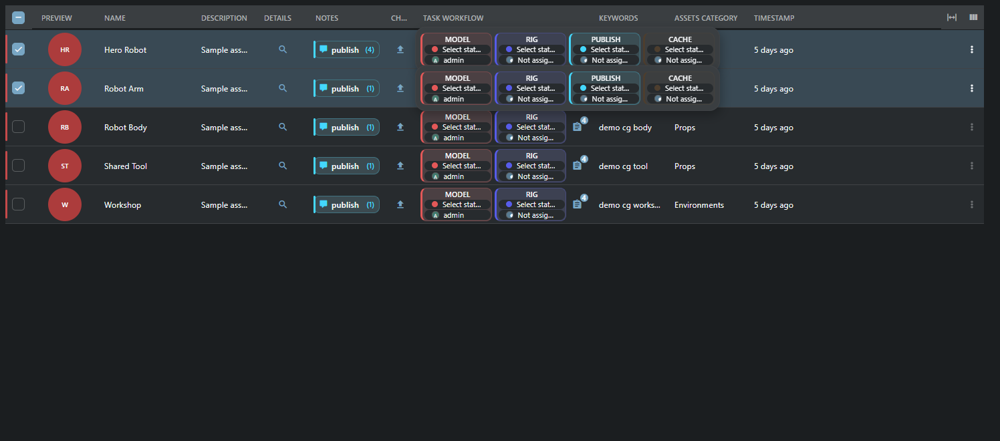
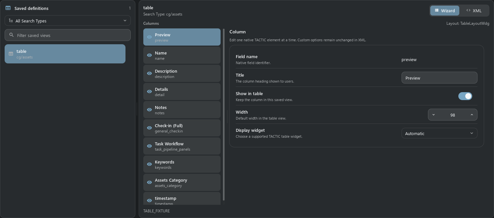
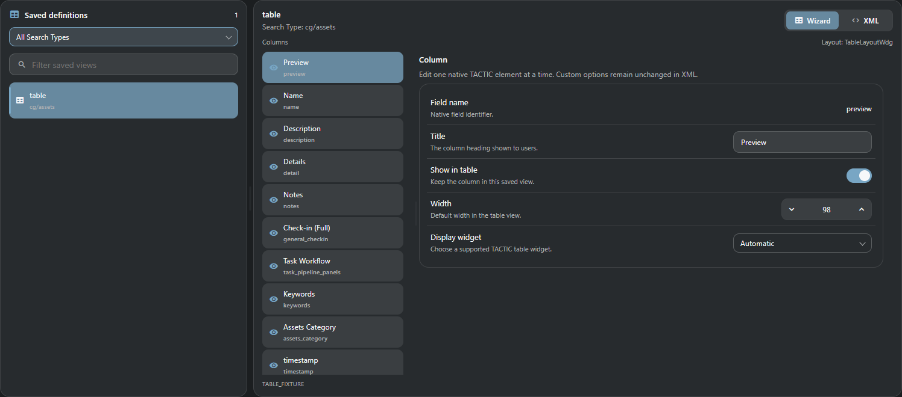

Перенесены действующие адаптированные сценарии: 45 зарегистрированных имён, 21 класс, таблица и редактор колонок. Полный старый HTML/JS runtime и незавершённые исходники сюда не входят.
Свежие текущие QML/Vue: один временный CG-проект, пять Assets, EN, MD3, Segoe UI, 1496 × 660, 96 DPI / scale 1. Qt и Chromium используют разные растеризаторы шрифтов. Контроллеры снимков изолированы; native операции, HTTP и XML-RPC проверяются отдельно.





Регистрация всех 45 имён; 10 реальных CG-колонок без unsupported/error; geometry header/row/preview/task card; selection/keyboard, sorting/grouping, auto-fit, resize/order/hide/presets/conflicts; native text and foreign-key edits, batch rollback, rights; inline assignee and task drafts; 1000 rows with virtualized display and bounded batches; Columns Editor Wizard/XML, requested column, EN/RU and width 320. Свежие QML/Vue hover-превью: четыре карточки, 456 × 68, без обрезки и лишних скроллов. Браузерные проверки RU, pixel scale 1.25/1.5, высот строк 58/84 и ширины 320: единственная горизонтальная прокрутка сохраняет доступ к последней задаче.
Открытие клиентских папок/локальных DCC и move/link требуют desktop bridge. Explorer копирует штатный путь; check-in использует browser upload. XML/JSON, source totals и неподключённые legacy options не объявлены полностью готовыми. Физический телефон, другие DPI и PostgreSQL в этом прогоне не проверены.
| Имя в конфигурации | Адаптированный класс |
|---|---|
tactic.ui.common.SimpleTableElementWdg | SimpleTableElementWdg |
tactic.ui.common.base_table_element_wdg.SimpleTableElementWdg | SimpleTableElementWdg |
tactic.ui.common.RawTableElementWdg | RawTableElementWdg |
tactic.ui.common.base_table_element_wdg.RawTableElementWdg | RawTableElementWdg |
tactic.ui.table.FormatElementWdg | FormatElementWdg |
tactic.ui.table.format_element_wdg.FormatElementWdg | FormatElementWdg |
tactic.ui.table.ExpressionElementWdg | ExpressionElementWdg |
tactic.ui.table.expression_element_wdg.ExpressionElementWdg | ExpressionElementWdg |
tactic.ui.table.ExpressionValueElementWdg | ExpressionValueElementWdg |
tactic.ui.table.expression_element_wdg.ExpressionValueElementWdg | ExpressionValueElementWdg |
tactic.ui.table.LinkElementWdg | LinkElementWdg |
tactic.ui.table.link_element_wdg.LinkElementWdg | LinkElementWdg |
ThumbWdg | ThumbWdg |
pyasm.widget.ThumbWdg | ThumbWdg |
pyasm.widget.file_wdg.ThumbWdg | ThumbWdg |
tactic.ui.widget.DiscussionElementWdg | DiscussionElementWdg |
tactic.ui.widget.discussion_wdg.DiscussionElementWdg | DiscussionElementWdg |
tactic.ui.table.SObjectDetailElementWdg | SObjectDetailElementWdg |
tactic.ui.table.sobject_detail_wdg.SObjectDetailElementWdg | SObjectDetailElementWdg |
tactic.ui.table.CheckinButtonElementWdg | CheckinButtonElementWdg |
tactic.ui.table.table_element_wdg.CheckinButtonElementWdg | CheckinButtonElementWdg |
tactic.ui.table.TaskElementWdg | TaskElementWdg |
tactic.ui.table.task_element_wdg.TaskElementWdg | TaskElementWdg |
tactic.ui.table.TaskCompletionWdg | TaskCompletionWdg |
tactic.ui.table.statistic_wdg.TaskCompletionWdg | TaskCompletionWdg |
tactic.ui.table.ExploreElementWdg | ExplorerElementWdg |
tactic.ui.table.ExplorerElementWdg | ExplorerElementWdg |
tactic.ui.table.ExplorerTableElementWdg | ExplorerTableElementWdg |
tactic.ui.table.explorer_wdg.ExplorerElementWdg | ExplorerElementWdg |
tactic.ui.table.SObjectFilesElementWdg | SObjectFilesElementWdg |
tactic.ui.table.sobject_summary_wdg.SObjectFilesElementWdg | SObjectFilesElementWdg |
tactic.ui.table.MetadataElementWdg | MetadataElementWdg |
tactic.ui.table.metadata_element_wdg.MetadataElementWdg | MetadataElementWdg |
tactic.ui.table.DeleteElementWdg | DeleteElementWdg |
tactic.ui.table.delete_element_wdg.DeleteElementWdg | DeleteElementWdg |
ArrayTableElementWdg | ArrayTableElementWdg |
pyasm.widget.ArrayTableElementWdg | ArrayTableElementWdg |
pyasm.widget.table_element_wdg.ArrayTableElementWdg | ArrayTableElementWdg |
XmlWdg | XmlWdg |
pyasm.widget.XmlWdg | XmlWdg |
pyasm.widget.table_element_wdg.XmlWdg | XmlWdg |
tactic.ui.table.JsonElementWdg | JsonElementWdg |
tactic.ui.table.json_element_wdg.JsonElementWdg | JsonElementWdg |
tactic.ui.table.SnapshotVersionElementWdg | SnapshotVersionElementWdg |
tactic.ui.table.snapshot_element_wdg.SnapshotVersionElementWdg | SnapshotVersionElementWdg |
Измерения и SHA QML · Браузерные проверки · Реестр JSON · Общий legacy checklist